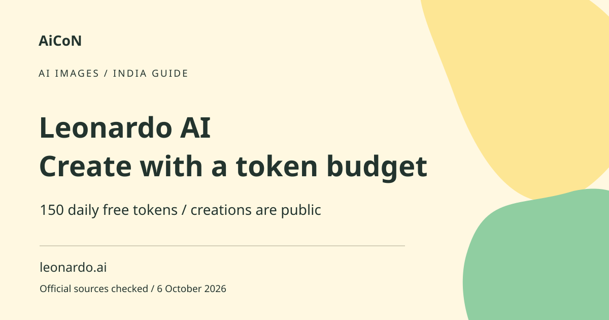

Leonardo AI: free tokens, public images and limits
Leonardo AI lets you generate images and use related creative tools. The current Free plan has 150 tokens per day and public creations. Tokens are an allowance, not a promise of 150 images.

What is a token in this service?
A token is a unit deducted when an action uses computing resources. Different models, sizes, settings and reference images can require different amounts. Video can consume more than a simple image task. The token FAQ says the action cost is shown before generation, generally on the button. Read that cost before clicking rather than guessing from another user's results.
How to use it, step by step
- Open leonardo.ai and review the current plan and creation-access settings. Use the official route, not an offer promising unlimited free credits.
- Start with a non-sensitive prompt and a simple scene. Describe the subject, composition and intended style in clear words.
- Choose a model available in your account and read the token cost shown for your selected settings.
- Check the number of output images and any reference-image or editing charges. Do not assume a previous cost still applies.
- Generate only after confirming that the public setting is acceptable. Avoid private portraits, documents and client assets on the free tier.
- Inspect the actual image. Check hands, text, logos and factual details instead of trusting a thumbnail.
- Revise one problem at a time and watch the remaining allowance. Edits, upscales and other actions can use more tokens.
- Download a result you want to keep and review the service terms before using it commercially or in a client project.
Daily allowance and resets
Free users receive 150 daily tokens. Unused free tokens do not accumulate or carry forward. The official FAQ describes a 24-hour reset and suggests checking the token counter for the account's reset time. It is not a guaranteed midnight India reset. When the free allowance is exhausted, wait for its next reset or review a paid plan. Do not buy a top-up expecting the free tier to support it.
Public creations and ownership
The pricing page lists free creations as public and gives the service rights to use free-tier images. It also describes a non-exclusive, royalty-free commercial-use licence for free users. Paid and free rights differ. That is the vendor's contract description, not a guarantee that every output is legally clear: trademarks, third-party likenesses and source material can still matter. Check current terms for the intended use.
Paid features are not universally unlimited
Paid plans provide larger allowances and selected private features. Relaxed generation is a slower processing mode available for specified plans and models. It does not include every external model or tool. Token top-ups are for paid subscribers, and the FAQ says they require an active subscription to use. A headline about unlimited generation should not be read as unlimited access to everything.
For creators in Kerala and India
A generated poster can support a school project or a concept draft, but it is not a photograph of a real event. Label illustrative output when readers could mistake it for evidence. Add final Malayalam or English text in a reliable design editor if the generated lettering is wrong. Verify faces, landmarks and uniforms when they are meant to depict real-world details.
India price and privacy checks
Displayed plan prices exclude tax, which may be added at payment. Confirm the monthly or annual option and final rupee total instead of copying a rough conversion. Review both prompt and reference-image access before uploading. A paid private setting is different from a guarantee that sensitive client data may be sent under your organisation's rules.
Frequently asked questions
Do 150 tokens mean 150 images?
No. Cost varies by action and settings.
Do unused free tokens roll over?
No. The free allowance resets and unused tokens expire.
Are free images private?
The checked plan lists public creations.
Can I use outputs commercially?
The vendor describes a free-tier licence, but read current terms and check third-party rights.
Official sources
Checked 6 October 2026. Expanded from an AiCoN short post delivered 6 October 2026. Portal screens and rules can change.